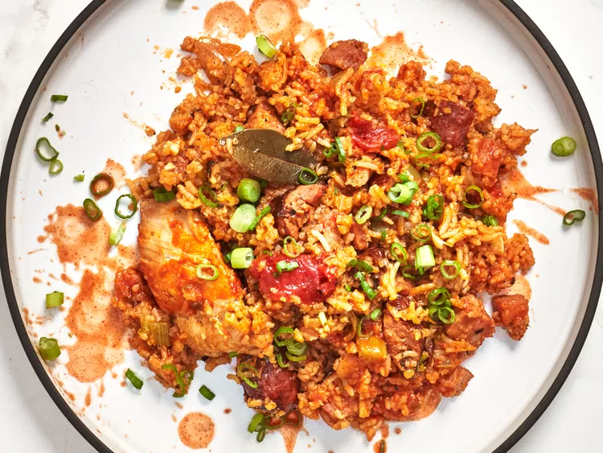

Main Courses
-
French Onion Beef and Noodles

This French onion beef and noodle dish tastes like an onion-y beef stroganoff topped with tasty fried onions. It's fancy enough for adults but very approachable for littles, too.
-
Roscoe's Jollof Rice

Roscoe's jollof rice recipe is fragrant and spicy jasmine rice cooked in a pureed tomato and pepper base.
-
Chicken and Sausage Jambalaya
Chicken and sausage jambalaya is a classic one pot meal, with the Holy Trinity of Louisiana cooking—celery, onion, and bell pepper—combined with chicken and rice. Tasso and andouille bring the spice and flavor.